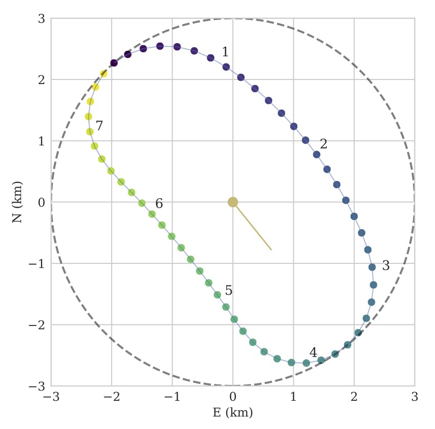

Trajectory Optimization for High Altitude Long Endurance Aircraft
18 Dec 2018, Andrew Ning
Our lab has been studying solar powered high altitude long endurance aircraft (HALE) for the past couple of years. HALE aircraft are intended to fly persistently, or at least for very long periods of time, with various applications including telecommunications (replacing more expensive satellites), surveillance, and weather monitoring. Persistent flight is challenging and requires high altitudes where wind speeds are reduced, large wingspans and lightweight structures (both of which reduce induced drag, the dominant source of drag at low speeds), and efficient solar capture. A well known example from a decade ago was the NASA Helios. More recent commercial examples include Airbus’ Zephyr, Facebook’s Aquila, and Aurora’s Odysseus.
To remain aerodynamically efficient, aircraft have a minimal amount of forward projected area, in other words most of the area available for solar panels faces upward. That works well when the sun is straight overhead, but during the winter solstice the sun is low in the sky (and is never straight overhead) reducing the amount of incident solar energy. Furthermore, the days are shorter in the winter, which further reduces the amount of solar energy available. Thus, winter solstice ends up being a limiting case for the design and operation of these aircraft.
In a collaboration between our lab and the PRISM Group we began exploring how much additional energy could be captured, for a given aircraft, just by changing how the aircraft is flown. To explore this question we solved for optimal trajectories, using nonlinear model predictive control, with models for aircraft dynamics, aerodynamics, solar capture, atmosphere, and propulsion. Trajectories were modeled for a full day with an eight-second time step resolution. This was a much finer resolution than existing studies, which ended up being important to uncover some interesting behavior. One major constraint in the problem was that the aircraft needed to stay within a fixed radius, as would be necessary for a telecommunications application. We hypothesized that the aircraft would try to bank to orient the panels more towards the sun, at least for part of the trajectory, but this did not happen.
The optimal trajectories during the day looked like the bean shape shown below, with the major axis oriented towards the sun (the yellow line in the middle of the figure points towards the sun). The outer circle is the radius constraint that the airplane must stay in. When flying away from the sun, points 4 to 7 in the figure, the aircraft increased its angle of attack, which results in slower flight speeds and increased incidence towards the sun. In other words, it increased its energy capture and increased the time during increased energy capture. On the return trip the angle of attack was lowered to quickly return back to the start. As the sun moved through the day, the bean shape would precess so as to remain oriented towards the sun. By flying these optimal paths the total energy capture at the end of the day was found to increase by about 8%, over conventional optimal circular paths, without any change in the aircraft (just changes in the way it is flown).

Other important details were explored including the effect of storing potential energy through altitude changes, orbit changes throughout the day, and seasonal changes. The journal paper was recently published and the postprint can be accessed here:
- Martin, R. A., Gates, N. S., Ning, A., and Hedengren, J. D., “Dynamic Optimization of High-Altitude Solar Aircraft Trajectories Under Station-Keeping Constraints,” Journal of Guidance, Control, and Dynamics, Vol. 42, No. 3, pp. 538–552, Mar. 2019. doi:10.2514/1.G003737
[BibTeX] [DOI] [PDF] [Code]
@article{Martin2018, author = {Martin, R. Abraham and Gates, Nathaniel S. and Ning, Andrew and Hedengren, John D.}, doi = {10.2514/1.G003737}, journal = {Journal of Guidance, Control, and Dynamics}, month = mar, number = {3}, pages = {538-552}, title = {Dynamic Optimization of High-Altitude Solar Aircraft Trajectories Under Station-Keeping Constraints}, volume = {42}, year = {2019} }
In related work, we did a study on optimal HALE vehicle design (which is still ongoing):
- McDonnell, T., Mehr, J., and Ning, A., “Multidisciplinary Design Optimization of Flexible Solar-Regenerative High-Altitude Long-Endurance Aircraft,” AIAA Structures, Structural Dynamics, and Materials Conference, Kissimmee, FL, Jan. 2018. doi:10.2514/6.2018-0107
[BibTeX] [DOI] [PDF]
@inproceedings{McDonnell2018, address = {Kissimmee, FL}, author = {McDonnell, Taylor and Mehr, Judd and Ning, Andrew}, booktitle = {{AIAA} Structures, Structural Dynamics, and Materials Conference}, doi = {10.2514/6.2018-0107}, month = jan, title = {Multidisciplinary Design Optimization of Flexible Solar-Regenerative High-Altitude Long-Endurance Aircraft}, year = {2018} }
More recently we combined our efforts on trajectory optimization with some aspects of aircraft design. As the trajectory changes, the optimal operating conditions for the propulsion system change as well. By coupling these design decisions we can increase end of day energy capture by over 10% as compared to optimizing these systems separately. These latter findings are still preliminary as this was a conference paper, but will be discussed in more detail once they become journal ready.
- Gates, N. S., Moore, K. R., Ning, A., and Hedengren, J. D., “Combined Trajectory, Propulsion, and Battery Mass Optimization for Solar-Regenerative High-Altitude Long Endurance Unmanned Aircraft,” AIAA Scitech 2019 Forum, San Diego, CA, Jan. 2019. doi:10.2514/6.2019-1221
[BibTeX] [DOI] [PDF]
@inproceedings{Gates2019, address = {San Diego, CA}, author = {Gates, Nathaniel S. and Moore, Kevin R. and Ning, Andrew and Hedengren, John D.}, booktitle = {AIAA Scitech 2019 Forum}, doi = {10.2514/6.2019-1221}, month = jan, title = {Combined Trajectory, Propulsion, and Battery Mass Optimization for Solar-Regenerative High-Altitude Long Endurance Unmanned Aircraft}, year = {2019} }
P.S. For fun, here is a 3D visualization Abe put together based on an Aquila-like configuration at winter solstice.